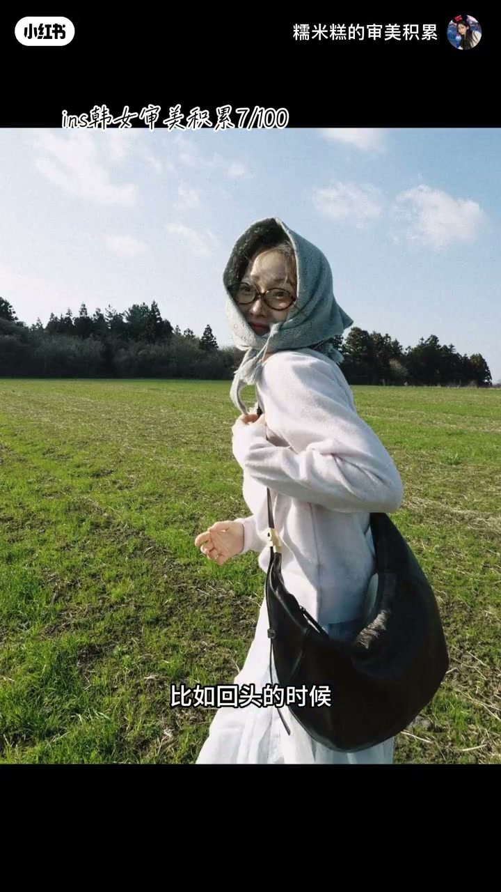
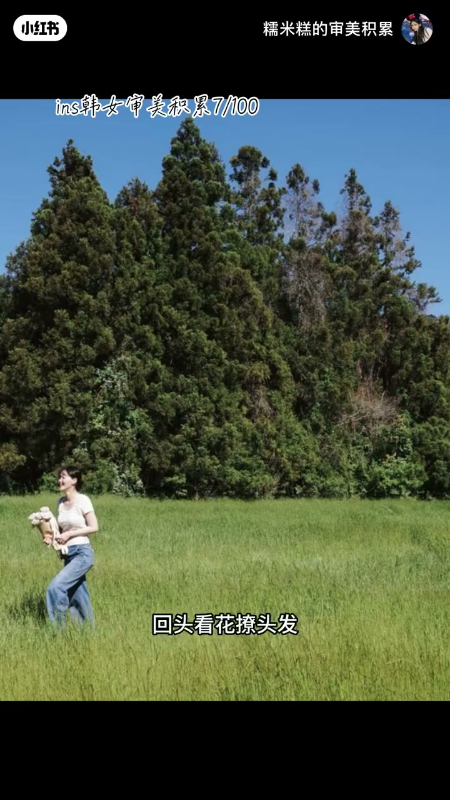
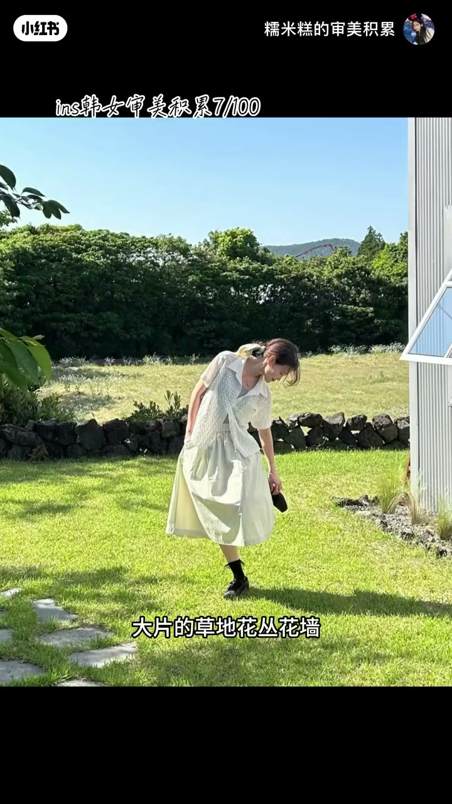
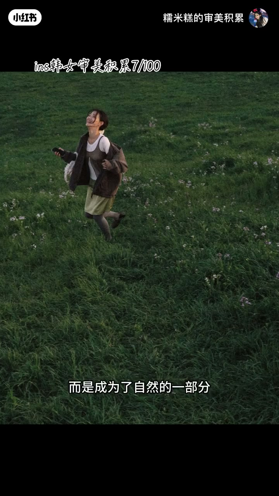
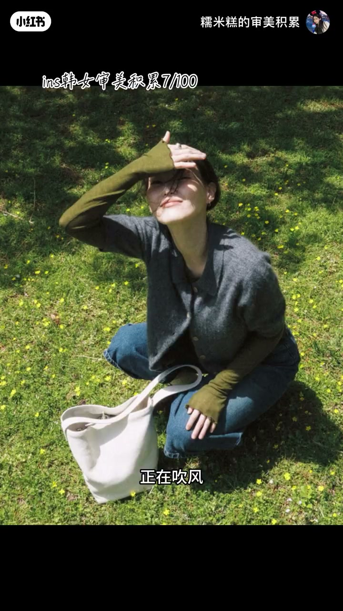
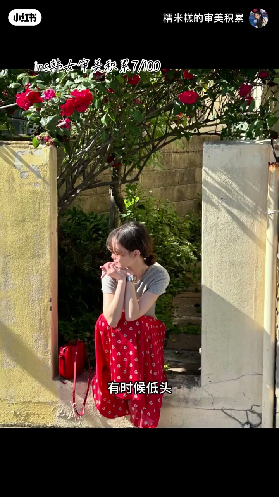
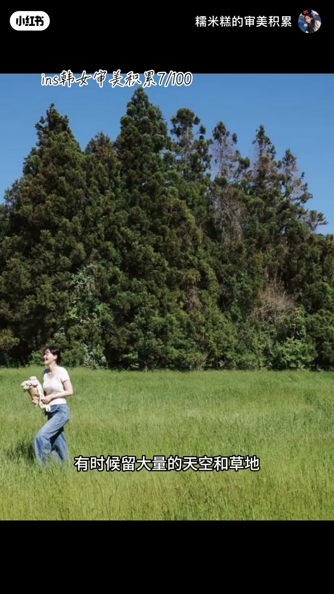

内容要点
如何拍出韩女那种很日常又很有生命力的照片？博主「糯米糕的审美积累」在 ins 审美积累第 7 期给出六步结构：人物要拍过程态而不是完成态；地点要选背景本身会「活」的草地、花丛与街道；人要融进环境而不是霸占画面中心；晴天自然光负责制造温度感与身体联想；表情不要一直营业；构图不要过度追求标准。整条视频不是空泛夸「氛围感」，而是把生命力拆成可执行的抓拍与选景动作。
知识结构
生命力首先来自人物在动；动作取过程态（正在转身、挡阳光、真的在走）而非摆好的完成态，给自己动态任务让摄影师抓瞬间。
不只要好看，更要有生命活动：大自然或烟火气街道；背景会动（草、叶、花、光、行人）；前中远景分层做出空间感。
人物只占画面一小部分，成为自然的一部分；看见的是她在草地阳光里生活，而不是被强调的脸。
晴天自然光带来温度感与「晒太阳/吹风」的身体联想；光、风、发、人同动；逆光侧逆光勾边增添温暖生命力。
不必一直对镜头笑；看远处、低头、闭眼、看周围——从「证明好看」切换到「享受此地」，后者更像记录生活。
人物可偏一侧、留大片天空草地、被树花阴影遮一点；像随手按下快门，不过度追求完美构图才更像真实生活。
生命力出片的关键不是「摆出标准美」，而是让过程、环境、光线、表情和构图都保留正在发生的痕迹：动起来、站进活的背景、人缩小进环境、用自然光唤起身体感受，表情与构图都少一点营业感。
00:00-00:49步骤一：拍过程态，不拍完成态
开场设问：如何拍出韩女那种很日常又很有生命力的照片？本期是硬丝（ins）审美积累第七期。博主先给总判断：生命力最重要的来源，是人物几乎都在动，很少有标准、刻意的定格。
聪明之处在于动作常是过程态而非完成态：回头是正在转身，不是已经摆好侧脸；抬手像在挡阳光，不是手规规矩矩放头顶；走路真的在移动，不是站成模特步；坐着是认真地靠和伸展，不是笔直端着。身体在动、情绪放松，照片才有「正在发生」的感觉。实操口令：不要想着摆好看姿势，给自己慢慢走、回头、看花、撩头发这类动态任务，让摄影师抓过程中的瞬间。


00:49-01:36步骤二：选有生命活动的地点，并做出层次
第二点关于选点：不是只找好看的地方，而是找有生命活动的地方。拍照地点几乎不是纯粹建筑背景，而是天然自在的大自然，或很有人间烟火气的街道——草地、花丛、花墙、绿植、有阳光照进来的户外、公路与街道。
这些地方共同点是背景本身是活的：草随风动、树叶会摇、花会盛开、阳光会变、路上有行人。即便人物完全不动，画面也不死板。技巧是找有层次的地方：前景人物、中景草坪、远景树林蓝天，空间感与层次感会明显变强。

01:36-02:02步骤三：人物融进环境，而不是霸占画面
第三点：人物和环境不是分开的，而是融在一起。很多照片里人物只占画面一小部分，反而更有呼吸感——一个人站在大片绿色草地里，不是绝对中心，而是自然的一部分。
观众看到的不是「这个女生长得怎么样」，而是她一个人在春天的草地、阳光、花丛里生活。这种「人在环境里」的感觉，比单纯强调人像的照片更有生命力。

02:02-02:46步骤四：自然光制造温度感与身体联想
第四点，光线是这组照片的一大亮点。几乎都在晴天下拍，自然光会制造温度感——看到温暖阳光，会天然联想到春天、自由、明媚、治愈。自然光其实在帮照片传递身体感受：不是单纯看见女生站着，而是感觉她好像正在晒太阳、吹风、享受这个下午。
真实户外光线本来就会变化：光在动、风在动、头发在动、人物也在动，整张照片就有了活着的感觉。尤其逆光与侧逆光，会把头发和衣服边缘用阳光勾出来，给人物增添温暖的生命力。

02:46-03:09步骤五：表情不要一直营业
第五点：她的表情没有一直在营业。人物不需要一直对着镜头笑——有时看远处，有时低头，有时闭眼，有时只是很自然地看着周围。
这样一来，照片少掉「我要证明自己很好看」，多了一种「我正在享受这个地方」。差别很大：前者是在拍自己，后者是在记录生活，而后者往往更有生命力。

03:09-03:29步骤六：构图不过度追求标准
最后，构图没有过度追求标准：人物有时站在画面一侧，有时留大量天空和草地，有时被树、花、阴影遮挡一点。甚至有些照片看起来不像在拍照，像是摄影师站在那里看到瞬间马上按下快门。
这种不过度追求完美的构图，反而特别像我们真实的生活——生命力往往藏在「差一点标准」的松弛里。

完整转录（132段）
以下文本由 Whisper medium 模型自动转录，可能存在少量识别误差，已尽可能修正。
如何拍出韩女这样很日常的又很有生命力的照片呢
我的硬丝审美积累第七期来了
首先她照片的生命力最重要的来源是
人物几乎都在动
很少有那种标准的很刻意的动作
她很聪明的一点是
动作经常不是完成台
而是过程台
比如回头的时候不是已经摆好侧脸
而是正在转身
抬手的时候不是手规规矩矩地放在头顶
而像是正在挡阳光
走路的时候两条腿不是站成摩托布
而是真的在移动
坐着的时候
身体也不是比指端着
而是认真地靠和伸展
当身体在动
情绪放松下来
照片就会有一种正在发生的感觉
所以我们拍照的时候不要想着
我要摆好一个好看的姿势
而是给自己一个正确的动态的动作
比如慢慢走
回头
看花
撩头发
让摄影师去抓拍那个过程中的瞬间
第二点
她在地点的选择上也很有讲究
不是只找好看的地方
而是要找有生命活动的地方
她拍照的地点几乎都不是纯粹的建筑背景
而是天然自在生命的大自然
或者是很有人间烟火气的街道
她的照片里经常都出现
大片的草地
花丛
花墙
绿植
有阳光照进来的户外空间
公路
街道
这些地方有一个共同的特点
背景本身就是活的
草会随风动
树叶会摇
花会盛开
阳光会变化
路上会有行人经过
所以即使人物完全不动
画面也不会觉得很死败
这里有一个技巧
只要有层次的地方
比如这组照片里
它就不是一眼望到底的平面背景
它的前景是人物
中景是草坪
远景是树林和蓝天
这样照片就会有很强的空间感
更有层次
第三点
人物和环境不是分开的
而是融在一起
它的很多照片里
人物都只占画面的一小部分
这反而让照片更有呼吸感
比如一个人站在大片的绿色草地里
人物不是整个画面的绝对中心
而是成为了自然的一部分
你看到的不是这个女生长得怎么样
而是她一个人在春天的草地上
阳光下
花丛里生活
这种人在环境里的感觉
会比单纯的强调人像的照片
更有生命力
第四点
光线是这组照片的一大亮点
照片几乎都是在晴天下拍摄
有很多的自然光
自然光会制造一种温度感
我们看到温暖的阳光
会天然地联想到
春天 自由 明媚 治愈
所以自然光其实是在帮照片
传递一种身体的感受
你不是单纯看到一个女生站在那里
而是会感觉
她好像正在晒太阳
正在吹风
正在享受这个下午
这种让观众产生身体联想的感觉
会让照片更加鲜活
再加上
因为真实的湖外光线本来就会变化
光在动
风在动
头发在动
人物也在动
于是整张照片就有了活着的感觉
尤其是一些逆光和侧逆光的画面
让人物的头发
衣服边缘会被阳光勾出来
给人物增添了温暖的生命力
第五点
她的表情没有一直在营业
她的照片有一个很明显的特点
人物不需要一直对着镜头笑
有时候在看远处
有时候低头
有时候闭眼
有时候只是很自然地看着周围
就让照片少掉一种
我要证明自己很好看
而多了一种
我正在享受这个地方
这两种状态的差别其实很大
前者是在拍自己
后者是在记录生活
而后者往往更有生命力
最后她的构图没有过度追求标准
人物有时候站在画面的一侧
有时候留大量的天空和草地
有时候会被树 花 阴影遮挡一点
甚至有些照片看起来
不像是在拍照
就像是摄影师站在那里
看到有一个瞬间
马上按下快门的感觉
这种不可以追求完美的构图
反而特别像我们正式的生活